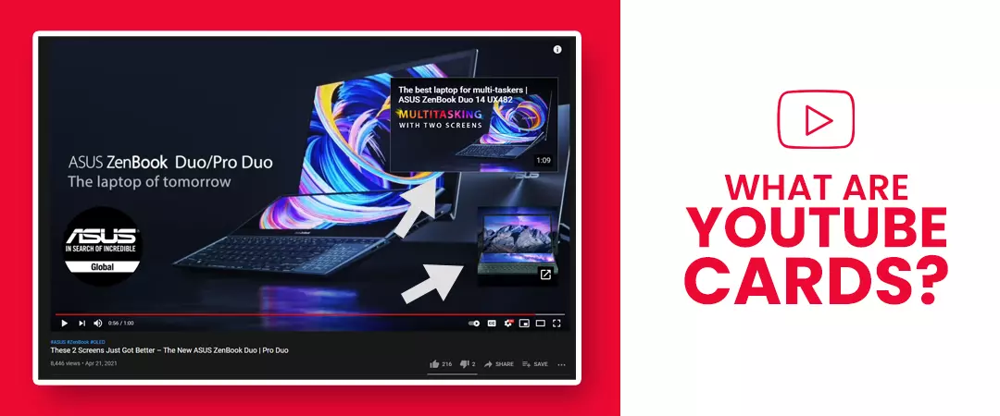
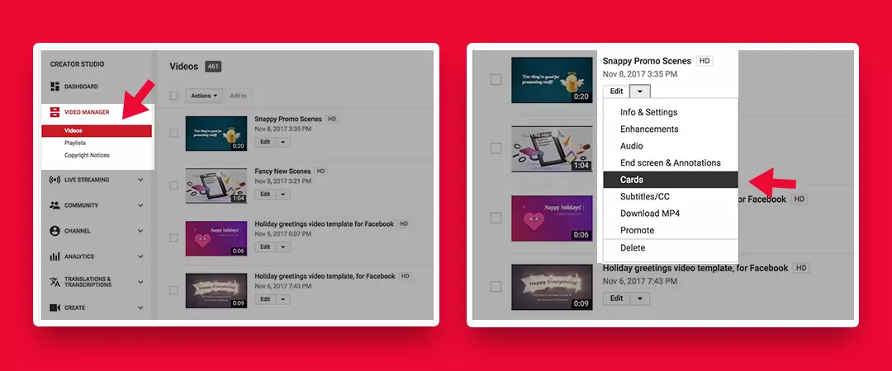
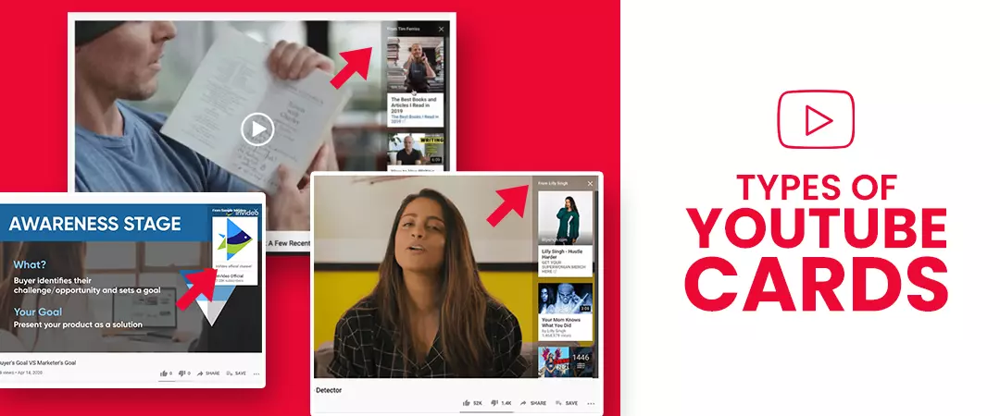
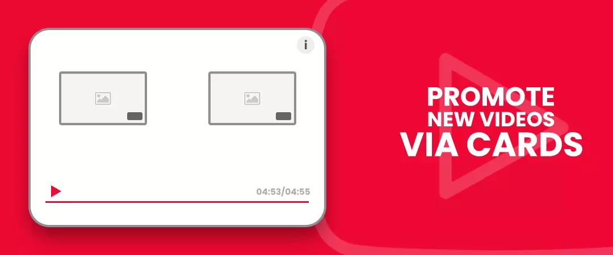
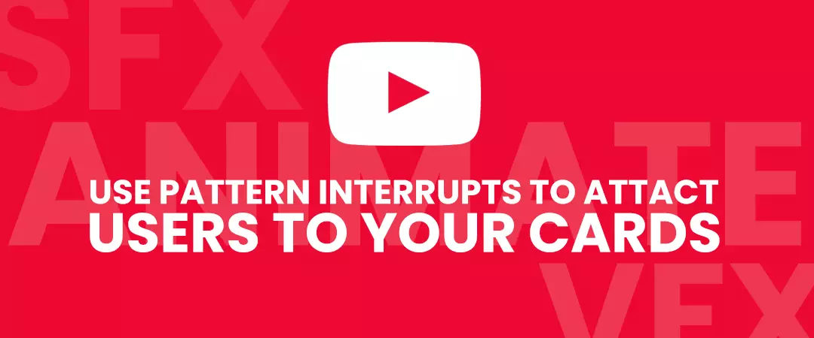
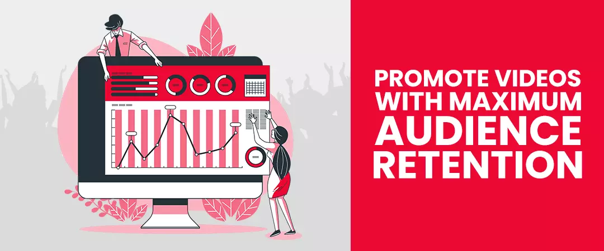
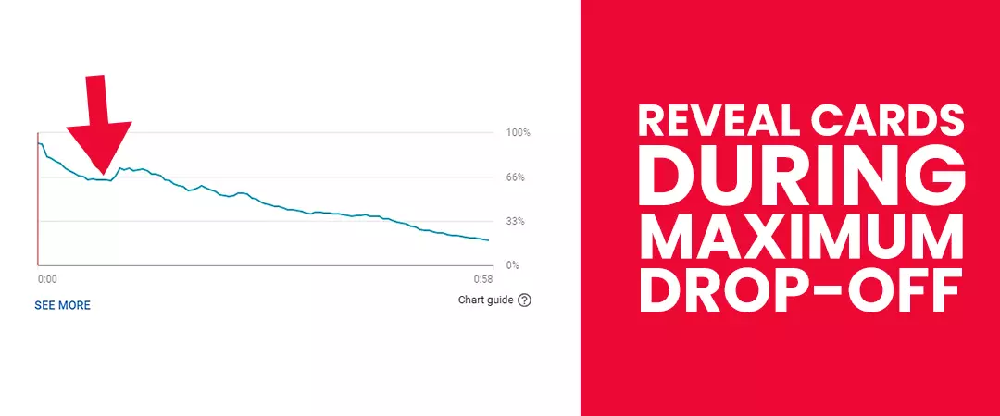
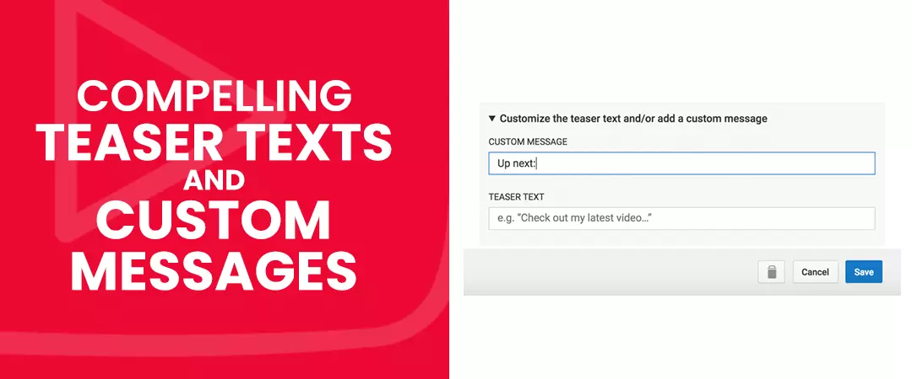
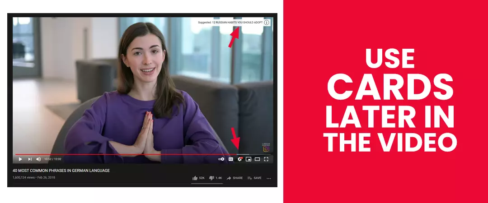

With YouTube cards, you have the potential to get twice the number of views on your videos. Cards are important because when your viewers drop off from your videos, they usually start watching videos from a different channel.You have to prevent this at all costs and make sure they stay engaging with you for a long time, and this is exactly what YouTube cards are for!
This is a powerful interactive feature that allows YouTubers to promote videos, playlists, channels, and even merchandise on their videos. Cards are a lucrative YouTube marketing tool that significantly improves user engagement. Cards are simple notifications with clickable YouTube Call-to-Action that pop-up anytime in the video – Prompting action from its viewers.
Here, you will understand how to add YouTube cards to your videos and how your businesses or brands can benefit from cards, let us first explain what are these!
Contents
- 1. What areYouTube Cards?
- 2. How to Add Cards to your YouTube Video?
- 3. Types of YouTube Cards
- 4. Promote new videos via cards
- 5. Use Pattern interrupts to attract users to your cards
- 6. Promote videos with maximum audience retention
- 7. Reveal Cards during maximum drop-off
- 8. Compelling Teaser texts and Custom Messages
- 9. Use cards later in the video
- 10. Monitors the card performance
What are YouTube Cards?

YouTube video cards are pop-up notifications that show up during the video. After setting up, cards take a rectangular shaped box, which creators can use to promote brands, videos, playlists, etc. You can choose from different card options available, such as video, merchandise, fundraising, etc. A teaser text appears at the top right corner of the video, this gives viewers a brief introductory message. The card expands on the right when users tap on the teaser.
Cards have maximum efficiency when paired with an appealing call-to-action or if the videos being promoted, bears relevance to the current content. Cards disappear from the view if users do not click on them. Cards have to be used at the right time. For example, you can place cards when you are promoting a product.
You can use cards to promote other videos, playlists, and websites. Cards can also ask viewers to buy what you are selling or donate for a fundraiser.
Creators can also utilize cards for their older videos to promote new video content or merchandise or crowdfunding endeavours.
How to Add Cards to your YouTube Video?

-
From your Channel page, go to your YouTube Studio.
-
To add a card to your video, navigate to your YouTube Video Manager, select your choice video, tapon the edit drop-down below the video Title.
-
Once you reach the next screen, on the top navigation bar, tap the card tab to create a YouTube video card, click on Add cardand then tap on create on the right side of your choice of card.
-
Next, you must fill necessary details for card creation – this depends on your choice of card. For example, if you choose a channel, you have to enter the channel URL or Username, Teaser Text, and a custom message. And click on Create card.
-
You can fine-tune the exact pop-up time of the card in the video. After you add the card, move the card to the pop-up spot by dragging it on the timeline marker below the video.
-
As soon as you set your first card, watch the video to make sure you got the pop-up timing right. You can include a maximum of four cards in a video.
Types of YouTube Cards

Channel Card
By using cards in a video, you want to prompt some action from the viewers. Channel cards are used when you want to redirect your audience to engage with content from your second channel; if you collaborate with another YouTuber, you can use channel cards to send your viewers to their channel.
Link Cards
When you have an e-commerce store where you sell merchandise or run a blog that could use additional traffic, you can use thecard feature to backlink your external sources. Remember that you have to be in YouTube Partner Program if you want to include your website links in the video.
-
Websites:
Redirect audience from video to blog or E-commerce website.
-
Merchandise:
Promotion of products and services from legit retailers.
Playlist and Video Cards
Video and Playlist Cards come in handy when you want to keep an audience on your channel by shuffling them from one video to the next. You can use these card features at any point in the video to promote new videos, similar videos, or supplementary videos that can appreciate the content that the viewers are watching.
Best Practices of YouTube cards:
Promote new videos via cards

As soon as you come up with fresh content, it would help if you attracted as many eyes as possible.
Following are some ways you can do just that:
-
Begin by making a list of videos that are relevant to your new content.
-
For example: If you created a unique football video featuring some players, then the related videos can be about the skills they performed in the past.
-
Now, use cards on those related videos at the appropriate time, linking to your fresh video.
-
Repeat this process with every new video that you release.
-
Use Pattern interrupts to attract users to your cards.
Use Pattern interrupts to attract users to your cards

Cards can appear anytime during the duration of the video. Hence it is easy to escape the viewer’s field of vision.
To ensure that you get maximum card click-through rate, you need to guide the user’s attention towards your YouTube cards personally. One best practice would be to allow a specific point in your video to tell viewers to click on your cards, this call-to-action needs to be planned.
Promote videos with maximum audience retention

There are several ranking factors that the algorithm considers – one of the most important ranking signals is the Audience retention rate, i.e., how long your viewers stay and watch a video.
Video with a higher Audience Retention rate will get a higher ranking in YouTube SERPs and the recommendation section. Many people Buy Real YouTube Subscribers to gain organic traffic to rank higher in SERPs.
Just audience retention is not enough, you also need a large number of people who spend a significant portion of their YouTube session engaging with your video. This is where the feature of cards come in. Cards are a great way to direct people to your video that have proven to have high audience retention rate.
You can find videos with high Audience Retention score by looking at YouTube Analytics.
Reveal Cards during maximum drop-off

Show your YouTube info cards to the audience at the point in the video with the maximum drop-off rate.
Follow the below steps to find out when maximum viewers are leaving the video:
-
At the start, look at the audience retention report of the most popular video on your channel.
-
Observe the graph and look for the highest dip, this is where people usually end your video.
-
Make use of the cards at the right moment, when an increased number of visitors are dropping off.
-
Prevent users from leaving your channel by using cards to direct them to a different video or playlist.
Compelling Teaser texts and Custom Messages

You cannot customize the cards, but what you could do is write appealing texts and messages to grab your audience's attention.
The text that shows up on your card before the user decides to click on it is the Teaser text. A custom message appears when someone clicks and expands the card.
Follow the points below when writing Teaser text and custom messages for your cards for maximum YouTube click-through rate:
-
Use YouTube card Teaser Text that highlights the benefits of watching the video. For example: "How to get faster server response time?", "6 pack abs at home".
-
In your Custom message, include a compelling Call-to-action, like "Click to watch more," "Look at our merchandise."
-
If you want to funnel viewers to your next video; It is important to tell them that the card is sending to a new or supplementary video. Use texts like "Related" or "Coming up next."
Use cards later in the video

It would be best if you did not divert the attention of your viewers from the main content. Hence, we suggest using the card in the last 20% of your video. As stated earlier, a best practice would be to include the cards, where most people are dropping off, this is usually at the end.
Monitor-the-card-performance

This platform has reporting features that make it easier to track the performance of your cards.
By looking at the reports, you can get valuable information, such as:
-
The number of people that clicked your cards.
-
The type of card is working the best for you.
-
The video has the highest performing card.
Using this data, you can do more of what works for you in your upcoming videos, instead of when you add cards to YouTube videos and hope to give you results.
I hope you found this as a useful guide leveraging YouTube cards in your next video!
Feel free to share.